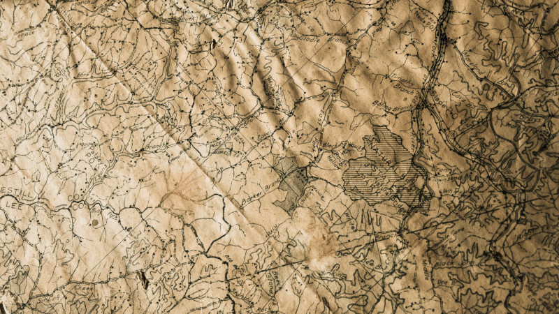

library(spatialsample)
spatial_clustering_cv(boston_canopy, 2)# 2-fold spatial cross-validation
# A tibble: 2 × 2
splits id
<list> <chr>
1 <split [277/405]> Fold1
2 <split [405/277]> Fold2January 17, 2023

A new release of spatialsample – an R package extending the rsample framework to handle spatial resampling and cross-validation – just landed on CRAN. This post will describe the new breaking changes to the spatial_clustering_cv() function, as well as improvements made to how spatialsample handles repeated cross-validation, as well as improvements made to how spatialsample handles repeated cross-validation; for a full list of changes, check out this release’s NEWS entry
You can install the package from CRAN via:
spatial_clustering_cv()The only (intentional!) breaking changes in this version are to the function spatial_clustering_cv(). This function is the oldest part of the package, and as such didn’t quite work like any of the other parts of the package: distance calculations sometimes used dist() instead of sf::st_distance(), distances used centroids instead of polygon edges, and trying to adapt this function to work with both sf and non-spatial data had made the internals a bit hairy.
As of rsample 1.1.1, all of those non-spatial elements have been outsourced to rsample::clustering_cv(). If you’ve been using spatial_clustering_cv() for non-spatial data, this function is pretty close to a drop-in replacement, and you should migrate code over.
For spatial point data, spatial_clustering_cv() should work identically to past versions. For other geometry types however, note that distance calculations have now changed to use edge-to-edge distance between geometries, rather than centroids as in past versions. This means this function now uses distances in a way that’s more consistent with the rest of the package, and more consistent with what I personally view as best practice; two polygons sharing a lot of perimeter but with centroids separated by a decent margin are still likely to be highly similar.
I think the most exciting part of this release is that all spatialsample functions can now handle cross-validation with repeats. Simply pass your desired number of repeats to the repeats argument of any function.2 The autoplot() function will now also automatically detect when you’ve used repeated cross-validation, and facet plots accordingly:
This is just scratching the surface of the new features and improvements in this release of spatialsample. You can see a full list in this release’s NEWS entry.
This joke I keep making is stolen from an old Kurt Braunohler video. Or potentially, this other Kurt Braunohler video. Or potentially, that first Kurt Braunohler video.↩︎
Though note that spatialsample should error if repeats would return the same exact folds, such as when using spatial_leave_location_out_cv() with v = NULL. This behavior might change in the future if anyone complains, but for the modeling projects I’ve worked on, you’d only repeat identical CV folds by accident.↩︎